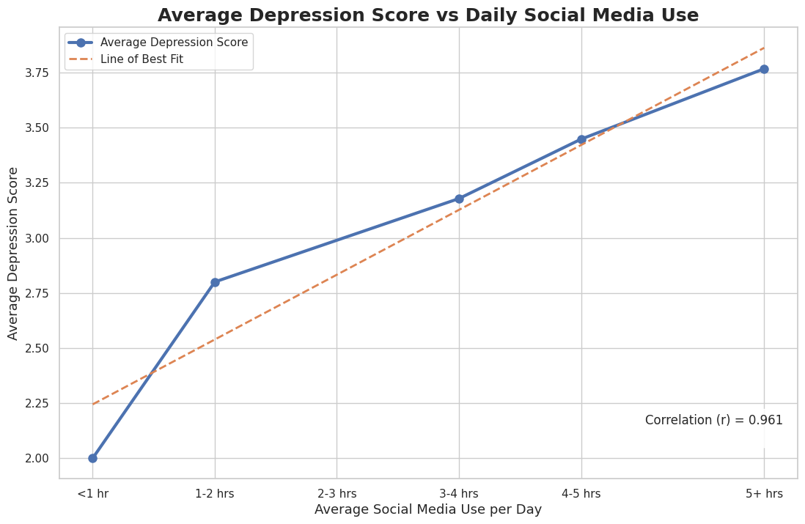
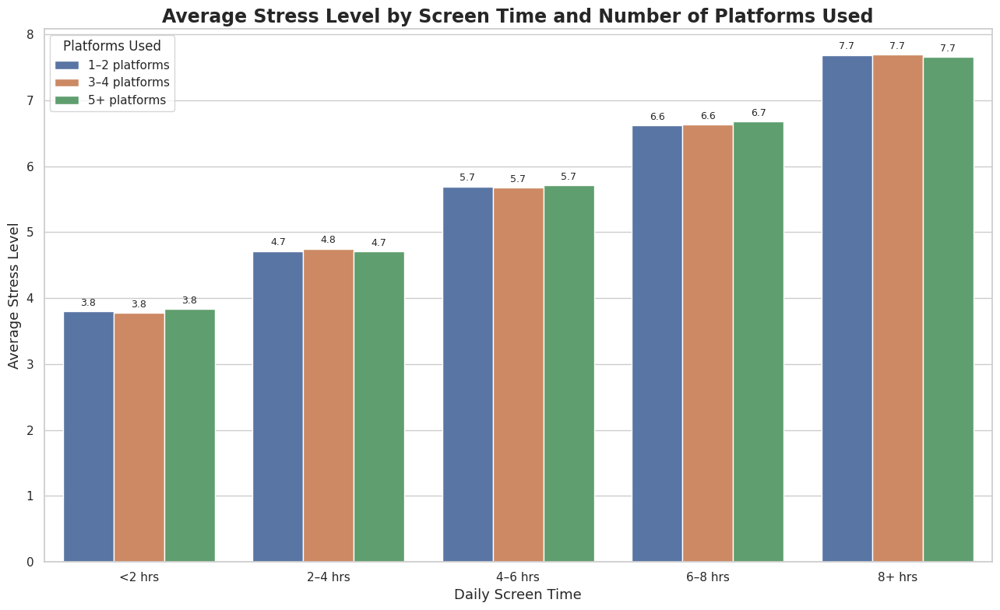
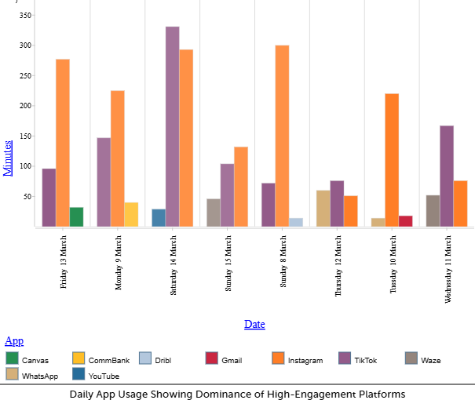
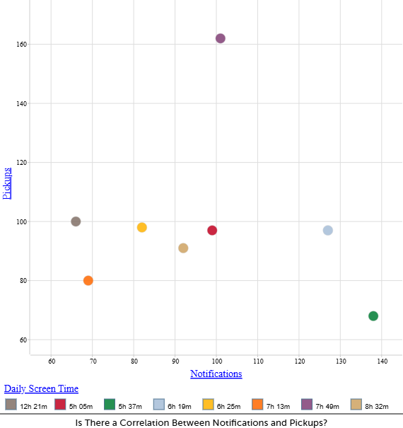

Should Social Media be Restricted for Under 16s?
1. Social Media Use and Depression

There is a strong positive correlation (r = 0.961) between daily social media use and depression scores.
2. Stress Levels Increase with Screen Time

Stress levels increase consistently as screen time rises, regardless of number of platforms used.
3. Platform Design Drives Engagement

High-engagment platforms like TikTok and Instagram dominate daily usage
4. Notifications Do Not Fully Explain usage

Weak relationship between notifications and pickups suggest habitual usage